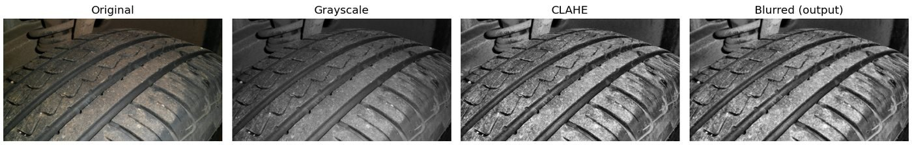

Preprocessing stages from the TreadCheck pipeline.
Featured · my own project
TreadCheck
Tyre condition screening from a phone photo
A smartphone-based tyre-condition screening system built with computer vision and machine learning. You photograph a tyre and it tells you whether the surface shows signs of wear, cracking or perished rubber. My own idea, and I built all of it — the pipeline, the model, the web app and the deployment.
I started from a classical computer-vision approach, then found that one of the original features was reacting strongly to image resolution rather than to the tyre itself. That sent me back to rethink the pipeline and simplify the production model. It now checks the photo before trusting it, and says when it isn't confident instead of guessing.
It screens surface condition from a photograph. It doesn't measure tread depth in millimetres, certify roadworthiness, or replace an actual tyre professional.
Research work currently being prepared for submission to journals.